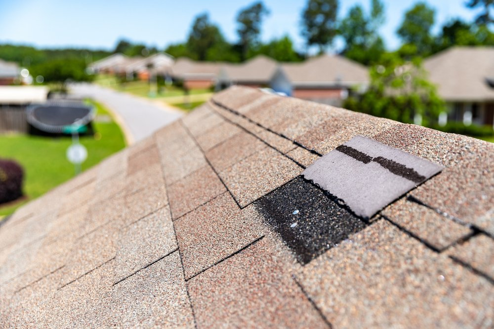

Sanders & Sanders Roofing
Sanders & Sanders Roofing
Call Now - 228-380-0334
Sanders & Sanders RoofingCall Now - 228-380-0334
All of our shingle roofs are installed to manufacture AND local standards. This protects your home from the elements of coastal living. We use GAF Timberline HDZ® architectural shingles, the #1 best-selling shingle in the market. We strictly adhere to local building codes and manufacturer instructions when installing your roof to ensure you don't have to worry about your home being protected from the unpredictable Mississippi weather

Corrugated metal is the most common type of metal roof, often called a "tin roof" in the south. These exposed fastner roofs have a longer lifespan than shingle roofs and are commonly considered more durable against strong weather systems.
Standing seam metal roofs have a more modern, high-end appearance. They offer a beautiful finish and supreme weather-proofing due to their concealed fastener design.
 IBHS-Certified FORTIFIED roofing systems offer the best protection for your
home with the added benefit of lower home insurance premiums! (Varies by carrier. Check with your
insurance agent for more information.)
IBHS-Certified FORTIFIED roofing systems offer the best protection for your
home with the added benefit of lower home insurance premiums! (Varies by carrier. Check with your
insurance agent for more information.)
As a FORTIFIED Roof™ certified installer, we us products that meet specific standards and install shingle and metal roofs in accordance with FORTIFIED™ Standard and manufacturer installation instructions. A certified FORTIFIED™ Evaluator must then independently verify that all requirements are satisfied before IBHS will award a 5 year designation. Many home insurance companies offer discounted rates on premiums.
 Sometimes you don't need a whole new roof. We have you covered for that as well. We offer repairs and maintenance to extend the life of your roof!